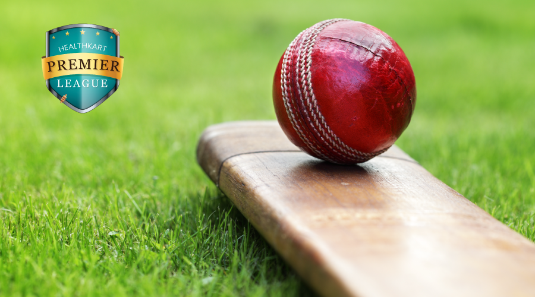

CRICKET.NET
Benefits Of Playing Cricket You Can’t Ignore
Cricket is a great team sport. We all love to watch cricket and invariably go gaga over our favorite team. However, there are a few passionate lovers who get down to playing the game themselves. From gully cricket, school-level matches and inter-state tournaments; while the magnitude of enthusiasm for this game keeps increasing, there are myriad benefits of playing cricket that are hard to ignore. Read through to learn more about the health benefits of playing cricket.
Physical Benefits of Playing Cricket
1.Stamina
Cricket involves sprinting in-between the wickets, running down your bowling line-up to bowl your next delivery, or simply chasing the ball to save crucial runs. The constant running on the field helps increase stamina.
2.Endurance
Whether it’s a fun game or an organized 20-over, 50-over, or 5-day test match, every game of cricket has long playing sessions. The perked up stamina helps one to remain active and agile for long cricketing sessions which builds the body’s endurance to withstand wear and tear.
3.Balance
The game requires the highest level of concentration which enhances balance and stability. For playing cricket, both physical and mental balance of the body comes into play. In fact, balance is the core of any athletic ability because it controls all other body movements.
Psychological Benefits of Playing Cricket
1.Concentration
The game of cricket is all about making quick decisions with great precision. This requires concentration and polished judgement skills. This sharpens the mind and builds the analytical skills of the brain.
2.Team Skills
Playing cricket is all about teamwork and coordination. With 11 players on either side, good and healthy teamwork is important to develop strategies, execute them to perfection and win matches for your team. Therefore, one of the most important psychological benefits of playing cricket lies in the fact that it is a team game.
3.Social Skills
Interacting and communicating not just with team members but also with your competitors helps you learn social skills. Also, while you win some games and lose some, it gives you the strength to cope with different life situations and challenges more effectively.
Conclusion
Whether you chose to play cricket for fun or competition, it is a perfect exercise to help you achieve your overall fitness goals. Monitored body weight, a perfectly toned body, enhanced stamina, great hand-eye coordination skills, or strong and in-control mental abilities; the benefits of playing cricket are way too many. But it is important to start slow and under professional guidance as cricket players are prone to physical and muscular injuries and frequent muscle cramping. Adequate nutrition with a protein-rich diet helps the body sustain the long play sessions, thereby helping you reap the health benefits of playing cricket.